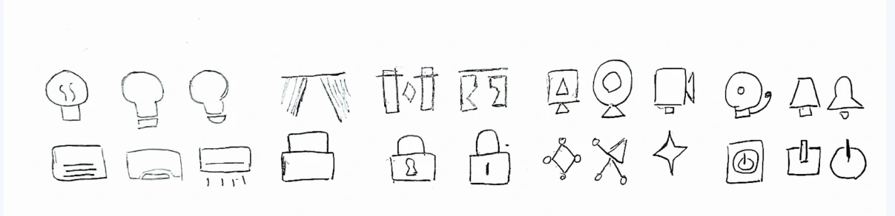
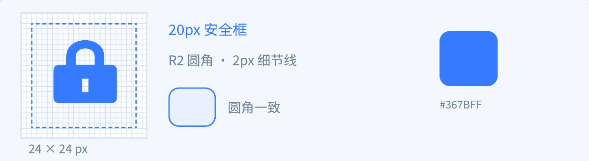
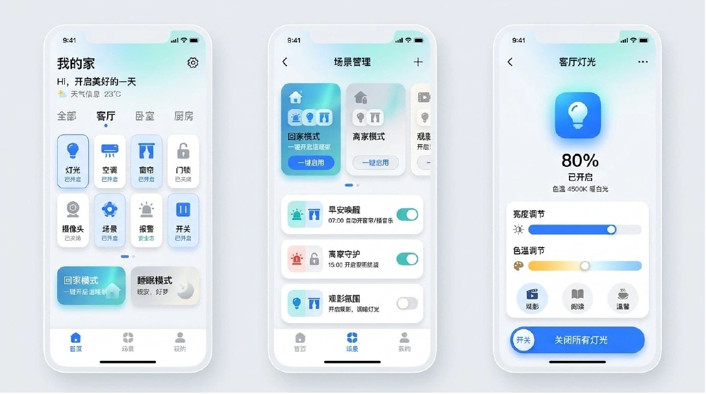

孙鑫宇 · 图标设计课程
AR 家居图标系统
透过屏幕看向客厅，用户需要认出哪一个图标能调灯、拉上窗帘或查看门锁。Aurora 极光助手围绕设备控制、场景管理和状态反馈，设计了八枚可以叠加在实景上的图标。
Aurora极光助手
先画出轮廓，再统一风格
草图里，同一盏灯可以画成灯泡、台灯或吊灯。最终稿用蓝色块面概括设备外形，保留窗帘中间的开口、门锁上的锁孔等细节，让相似尺寸的图标各有识别线索。

一把门锁的绘制规范
门锁图标画在 24 × 24 px 网格上，主体放入 20 px 安全框，圆角取 R2，局部细节按 2 px 处理。同组图标沿用这套尺度和主色 #367BFF。

放回控制界面
从设备列表进入场景管理，再打开单个设备的控制面板，图标承担的任务也在变化。总览页用轮廓帮助定位设备，控制页将图标与名称、数值和操作控件放在一起。
课程展板记录的看图选择测试中，门锁识别率为 97%，场景为 88%。在这组图标里，抽象的「场景」最值得继续尝试其他画法。
